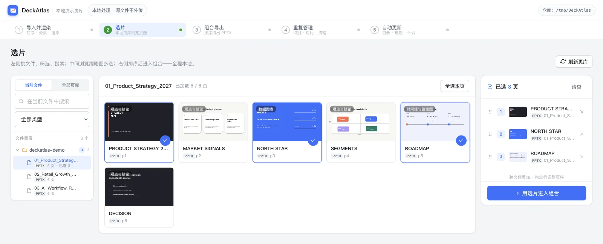

DeckAtlas 桌面端
macOS 13+ · Apple Silicon
PPTX 预览需要 LibreOffice。
DECKATLAS / 你的本地演示页库
过去做过的案例、图表和观点，都可以成为下一份方案的起点。
DeckAtlas 把散落的大稿建成按页搜索、预览和选片的本地资料库。你可以直接找页，也可以让接入后的 AI Agent 按你的需求找素材、组新稿。
01 / 你的困扰
准备一份新方案时，这四幕可能每天都在发生。
“我只要一页，先等整份稿打开。”
图片、视频越放越多，文件越来越大。只想看一张案例页，却要反复打开整份稿，再逐页翻找。
本地索引与预览 → 按页浏览“记得那页写了什么，不记得在哪份。”
案例藏在标题、正文或备注里。缺少跨稿的页面检索入口，仍得猜文件名、打开几份“最终版”，才能定位。
标题、正文、备注索引 → 直接找页“让 AI 找旧案例，还得我先找到它。”
散落的 PPT 缺少统一索引和明确的读取接口。让 AI 沿用以前的案例时，往往还得自己翻稿，再把内容交给它。
Agent CLI → 检索与读取真实页面“找齐了，还要一页页搬到新稿。”
封面、案例、结论在不同文件里，来回复制再核对顺序。新做的 PPT 和 AI 演示也各存一处，下次又得从头找。
跨稿选片 → 排序与组合导出把文件里的内容变成可检索的页面，给人和 AI 同一个复用入口。
以上为场景插画。单份 PPT 中可以查找文字；这里解决的是跨文件的页级索引与复用。首次导入仍需解析和生成预览，源 PPT 大小不会改变，也不会自动缩小其中的图片或视频。
02 / 工作流程
源文件仍由你管理。DeckAtlas 负责索引、预览、选片和组合。

选 PPTX 文件或整个文件夹。本地拆页、提取标题、正文和备注，生成缩略图与高清预览。
结果：文件里的内容，能按页搜索搜关键词，结合分类和页面用途筛选。打开大图确认，从不同稿件持续加入页面，选片顺序会保存。
结果：跨稿素材，集中到一张选片单拖拽排序，选择保存位置，再预检源文件和格式。PPTX 页面导出为可继续编辑的新 PPTX。
结果：拿到新稿，继续在 PowerPoint 编辑索引一次，之后按页查找先解析源稿并生成预览，后续浏览页库无需为看一页反复打开整份稿。首次导入时间随页数、文件复杂度和本机环境变化。
常用目录持续更新先预检新增与变化，再手动或按计划更新；定时执行需要应用运行、电脑唤醒。
资料留在本地本地源文件只读引用；清理页库只移除索引和缓存，被已保存选片引用的页面会受到保护。
| 素材来源 | 可以做什么 | 输出与边界 |
|---|---|---|
| PPTX 文件 / 文件夹 | 导入、搜索、高清预览、跨稿选片 | 组合为可编辑 PPTX；复杂媒体或外部对象以预检提示为准。 |
| HTML / ZIP / 在线演示 | 识别演示页面、静态归档、隔离预览 | 输出离线 HTML 或 ZIP；网页演示需有可识别的静态页面结构。 |
| PPTX + HTML 混合选片 | 跨格式选择页面，统一调整顺序 | 输出 HTML 或 ZIP，其中 PPTX 页以高清图片呈现。 |
v0.3.0-beta.1 打包版默认关闭 HTML，源码桌面模式默认开启。在线归档会下载资源并保存本地快照，不携带登录凭证、不执行来源脚本；登录态、内网地址和纯脚本页面不支持。视频、GIF 和部分 CSS 交互以实际兼容性提示为准。
03 / 快速上手
从熟悉的材料开始：你知道里面有什么，也更容易判断搜索、预览和导出是否符合预期。
安装 LibreOffice，打开 DeckAtlas，确认本地搜索与预览渲染可用。
等待索引和预览生成。保留源文件，后续导出还需要读取它。
尝试案例名、正文关键词或备注里的词。打开高清预览，选中需要的页面。
从选片进入组合，选保存位置，执行检查后生成 PPTX。用 PowerPoint 核对顺序和排版。
04 / 给 AI 与自动化
把接入说明交给能执行本机命令的 Agent。它完成安装、连接资料库并检查可用能力。之后，你交代任务，它调用页库。
复制下面的接入说明。Agent 检查环境，安装 CLI，连接你已有的资料库。
“找旧案例”“读取这页的备注”“按业务顺序组稿”。检索、选片清单和命令由 Agent 处理。
Agent 给出来源、选片和兼容性提示，按你的授权预检并导出；原始稿件保持不变。
Agent 执行预检、生成新稿并返回文件位置。你继续在 PowerPoint 里编辑。
这是接入后的任务流程说明，不是网页内可运行的聊天功能。能否完成以你的 Agent 工具权限、页库内容和 CLI 当前能力为准。
找出旧稿里关于供应链的页面，读取正文和备注，告诉我哪些可以复用，并标明来源文件和页码。
用我刚确认的页面和顺序组一份新 PPT，检查源文件和兼容性后，导出到已约定的目录，不覆盖现有文件。
新版导入预览支持导入的新版 CLI，还能按你的授权将生成的本地 PPTX / HTML / ZIP 加入页库。Agent 会先检查这一能力是否可用，保留原文件和依赖。
在源码仓库中，可由 Agent 执行下面的命令检查安装。页库与输出目录应使用你已有或明确选择的位置；环境配置、检索、真实页面标识、选片结构、预检 token 和写入授权的细节见接入说明及完整协议。
make install
.venv/bin/deckatlas capabilities05 / 版本与下载
当前处于 Beta 试用阶段。公开安装包和独立 CLI 包尚未开放下载，发布后会在这里提供入口。
PPTX 组合复制原生页面及关联资源，文本与元素可继续编辑；复杂媒体、OLE 和外部对象可能有兼容性限制。预览由 LibreOffice 渲染，字体缺失或字体度量差异可能影响显示。导出后请在 PowerPoint 中核对。
本地源 PPTX / HTML 只读引用，不上传或移动。索引、预览和选片记录保存在本机，在线归档会另存资源快照。换版本前保留原资料库和源文件；从页库删除只清理索引与缓存。
需要有可识别的静态演示页面，如 .slide 或 Reveal section。登录态页面、内网地址、依赖脚本生成的页面和普通网页不在支持范围内。CLI 导入仅接受本地文件，在线归档使用桌面端。
当前桌面构建面向 Apple Silicon Mac。Windows 和 Intel Mac 尚未完成打包与验证。